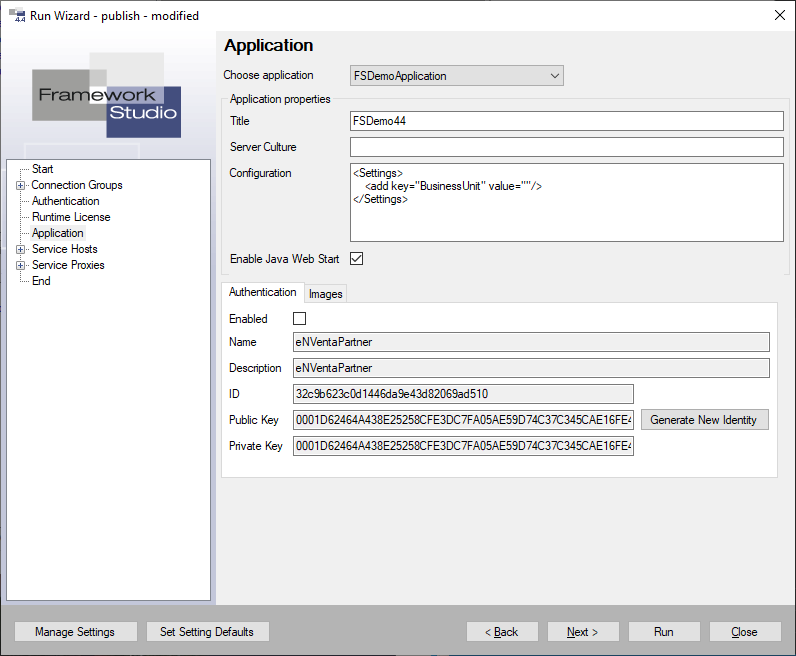

Run Wizard
Der Run-Wizard wird verwendet, wenn mit Framework Studio entwickelte Applikationen und Dienste (Service Hosts) getestet werden sollen. Gestartet wird der Run-Wizard über den Menüeintrag Compile / Run… oder über die Tastenkombination Umschalt+F5.

Der Run-Wizard arbeitet grundsätzlich wie bei Wizards üblich. Man kann sich mit den Buttons Back und Next durch die verschiedenen Einstellungen navigieren.
Um gezielt eine bestimmte Einstellung zu ändern kann man diese auch direkt über den Baum anwählen.
Button Restore Default Settings: Sämtliche Einstellungen, die im Run-Wizard definiert wurden, werden verworfen. Damit wird alles auf die Default-Einstellungen zurückgestellt. Die Default-Einstellungen werden aus der FSDomain gelesen.
Button Back, Next: Zur vorherigen bzw. nächsten Einstellung navigieren.
Button Run: Die ausgewählte Applikation und ausgewählten Service Hosts werden gestartet. Siehe auch Registerkarte End
Button Close: Schließt den Run-Wizard. Die geänderten Einstellungen werden in dem aktuellen User-Setting gespeichert.
Start
Active Languages
In dieser Liste kann die Sprach-Hierarchie definiert werden.
Start Mode
Mit der Combobox wird der zu startende Client ausgewählt.
- Client Launcher: Die Anwendung wird als Java-Client über den FS Client Launcher gestartet.
- Java Client: Die Anwendung wird als Java-Client über Java WebStart gestartet. Das setzt die Installation einer Java Runtime voraus.
- Html Client: Es wird der HTML-Client im Browser geöffnet. Diese Option steht nur zur Verfügung, wenn der HTML-Client in der Application aktiviert ist.
- Client Start Page: Es wird die Client Start-Page im Browser angezeigt. Diese Aktion kann man auch direkt mit dem Befehl Open Client Start Page (F6) aufrufen.
Server-Culture
Hier kann eine Culture definiert werden (z.B: de-DE, de-CH oder en-US) mit der die Anwendung ausgeführt werden soll.
Dies wirkt sich auf Culture-spezifische Aktionen wie z.B. Zahlen- und Datums-Formate aus.
Erfolgt keine Angabe, dann wird die Culture des Betriebssystems verwendet.
Logging / Tracing
Hier kann definiert werden, ob und in welche Ordner protokolliert werden soll.
Warning
Beide Protokollierung erzeugen große Daten-Mengen. Die Protokolle sollten nur gezielt in konkreten Situationen aktiviert werden.
Checkbox Session Trace: Diese Checkbox aktiviert das Session Trace. Dazu muss ein entsprechender Folder angegeben werden, in dem die Daten protokolliert werden sollen. Ist die Checkbox nicht gesetzt, dann hat ein ggf. definierter Ordner keine Funktion.
Checkbox Broker XML: Ist diese Checkbox gesetzt, dann werden alle Broker-Requests und Responses als XML-Datei gespeichert. Das kann hilfreich sein um ganz konkrete Probleme im Detail zu analysieren. Dazu muss ein entsprechender Folder angegeben werden, in dem die Daten protokolliert werden sollen. Ist die Checkbox nicht gesetzt, dann hat ein ggf. definierter Ordner keine Funktion.
Button Session Logging Analyzer
Dieser Button öffnen den Session Logging Analyzer und meldet ihn automatisch am Runtime-Repository an.
Connection Groups
Hier können die Verbindungseinstellungen für die verschiedenen Connection Groups definiert werden.
Die RuntimeConnection ist die Verbindung zum Repository.

Combobox Registerkarte Database: Hier kann eine Registerkarte Database ausgewählt werden. Die Angaben aus der Registerkarte Database werden entsprechend angezeigt. Diese Angaben werden dynamisch aus den Registerkarte Databases gelesen. Wenn sich also dort die Angaben ändern, werden diese auch hier verwendet.
Button Individual: Mit diesem Button können Sie eine individuelle Verbindung definieren. Die Felder für die Verbindungsdaten werden freigeschaltet und können entsprechend definiert werden.
Diese Daten gehen verloren, wenn aus der Combobox eine Datenbank ausgewählt wird.
Wenn eine Verbindung häufiger verwendet wird, dann ist es empfehlenswert, dafür eine Registerkarte Database anzulegen und diese dann hier auszuwählen.
Authentication
Hier können die Grundeinstellungen für die Authentication definiert werden.

Im Eingabefeld Default User wird der Name des Benutzers angegeben. Dieser Name wird von der mit Framework Studio erstellten Applikation automatisch verwendet, wenn die Authentifizierung eingeschaltet ist. Dies gilt nur solange noch gar kein Benutzer authentifiziert wurde.
Im Eingabefeld Default Password wird das Password des Default Benutzers angegeben.
Im Eingabefeld Public Key (Auth. Service) wird der öffentliche Schlüssel des Authentifizierungsdienstes angegeben, der von den Applikationen und Service Hosts verwendet werden soll.
Wenn der Authentifizierungsdienst läuft, kann der öffentliche Schlüssel des Authentifizierungsdienstes mit dem Button Get key from Auth. Service vom Dienst erfragt werden und wird automatisch in das Eingabefeld übernommen.
Im nicht editierbaren Eingabefeld Auth. Service Address wird die Adresse angezeigt, unter der alle Applikationen und Service Hosts, die mit Authentifizierung arbeiten, den Authentifizierungsdienst ansprechen. Diese Einstellung kann am AuthService Proxy geändert werden. Um zum AuthService Proxy zu wechseln, kann der Link Button Configure Auth. Service Proxy verwendet werden.
Runtime Licenses
Hier werden die zu verwendenden Laufzeitlizenzen konfiguriert. Die Lizenzkonfiguration kann mit dem Button Change configuration geändert werden.

Siehe Laufzeitlizenzen
Applications
Hier können alle Applikationen konfiguriert werden.

Mit der Combobox Choose application wird die zu startende Applikation festgelegt.
Application properties
Title: Name der Applikation. Dieser wird später im Anwendungsfenster und in der Task-Leiste des Betriebssystems als Bezeichnung der Applikation angezeigt.
Server Culture: Kultureinstellung, die im Server verwendet werden soll. Diese hat beispielsweise Auswirkungen auf „ToString()“ Methoden im Applikationscode.
Configuration: Hier können in einer Xml Struktur Parameterwerte angegeben werden, die der Applikation beim Start mit gegeben werden und in der Programmlogik ausgewertet werden können.
Enable Java Web Start: Damit kann auf der Client Start Page die Client-Option Java Web Start ein- oder ausgeblendet werden.
Registerkarte Authentication
Enabled: Nur dann, wenn in dieser Checkbox ein Häkchen gesetzt ist, wird die Applikation mit Authentifizierung gestartet. Nur dann sind auch die weiteren Einstellungen zur Authentifizierung zugänglich.
Name: Name der Applikation, mit der sich die Applikation am Authentifizierungsdienst anmelden soll.
Description: Beschreibung der Applikation.
ID: Eindeutige Identifikationsnummer der Applikation. Diese wird mit dem Button Generate New Identity zufällig erzeugt.
Public Key, Private Key: Öffentlicher und privater Schlüssel der Applikation. Die Schlüssel werden vom Authentifizierungsdienst verwendet, um diese Applikation zweifelsfrei zu identifizieren. Die Schlüssel werden mit dem Button Generate New Identity zufällig initialisiert.
Generate New Identity: Eine neue Identität für die Applikation wird generiert. Durch diesen Vorgang werden ID, Public Key und Private Key mit zufälligen Werten gefüllt.
Registerkarte Images

Auf der Registerkarte Images können Hintergrundbild (Background Image), Startbild (Start Image) und das Icon der Applikation angepasst werden.
Dafür stehen die Buttons  und Reset zur Verfügung.
und Reset zur Verfügung.
Mit dem Button  wird ein Dateiauswahldialog geöffnet. Es dürfen nur Bilder aus dem Brokerverzeichnis angegeben werden.
wird ein Dateiauswahldialog geöffnet. Es dürfen nur Bilder aus dem Brokerverzeichnis angegeben werden.
Mit dem Button Reset wird das jeweilige Bild auf die Standardeinstellung zurückgesetzt.
Service Hosts
Für jeden mit Framework Studio erstellten Service Host, der gestartet werden soll, werden hier alle Einstellungen vorgenommen.
Service Host – General
Hier werden allgemeine Einstellungen zu einem Service Host vorgenommen.

Active (Start Development Service Host): Wenn diese Checkbox gesetzt ist, wird dieser Service Host zum Starten via F5 markiert, andernfalls nicht.
Servername: Name des Servers, auf dem der Dienst/Service Host installiert werden soll.
Port: Port, unter dem der Dienst bereitgestellt werden soll.
CORS Origin: Wenn ein Service gehostet wird, der direkt über JavaScript aus dem Browser angesprochen wird, kann hier der CORS Origin gesetzt werden, welcher per HTTP-Header an den Client geschickt wird. Bei jedem Response des Services wird der Header „Access-Control-Allow-Origin“ mit dem angegebenen Wert mitgeschickt.
Configuration: Hier können in einer Xml-Struktur Parameterwerte angegeben werden, die der Applikation beim Start mit übergeben werden und in der Programmlogik über das GlobalObject ausgewertet werden können.
Note
Benutzerdefiniertes XML wird weder von FS, noch während der Laufzeit geparst oder auf Validität/Wohlgeformtheit geprüft.
Bereich Trace
Activate: Nur wenn diese Checkbox gesetzt ist, wird Protokollierung verwendet und es können weitere Einstellungen vorgenommen werden.
Output File: Datei, in die die Trace-Informationen geschrieben werden sollen. Mit dem Button  wird ein Dateiauswahl-Dialog geöffnet.
wird ein Dateiauswahl-Dialog geöffnet.
Trace Level: Über die Auswahlbuttons wird das Trace Level festgelegt.
Activity Tracing: Activity Tracing ein- oder ausschalten.
Service Host – Authentication
Hier werden die Authentifizierungseinstellungen zu einem Service Host vorgenommen.

Enabled: Nur dann, wenn in dieser Checkbox ein Häkchen gesetzt ist, wird die Applikation mit Authentifizierung gestartet. Nur dann sind auch die weiteren Einstellungen zur Authentifizierung zugänglich.
Name: Name der Applikation, mit der sich die Applikation am Authentifizierungsdienst anmelden soll.
Description: Beschreibung der Applikation.
ID: Eindeutige Identifikationsnummer der Applikation. Diese wird mit dem Button Generate New Identity zufällig erzeugt.
Public Key, Private Key: Öffentlicher und privater Schlüssel der Applikation. Die Schlüssel werden vom Authentifizierungsdienst verwendet, um diese Applikation zweifelsfrei zu identifizieren. Die Schlüssel werden mit dem Button Generate New Identity zufällig initialisiert.
Generate New Identity: Eine neue Identität für die Applikation wird generiert. Durch diesen Vorgang werden ID, Public Key und Private Key mit zufälligen Werten gefüllt.
Service Proxies
Hier kann die Serviceadresse von externen Diensten geändert werden.

End

Save Setting: Mit diesem Button öffnen Sie den Dialog zum Speichern der aktuellen Einstellungen in der Datenbank.
Benutzen Sie den Button Run um die ausgewählte Applikation und alle zum Starten markierten Service Hosts Service Host – General zu starten.
Update config files on start: Das Flag bestimmt, ob bei einem Anwendungsstart über den RunWizard oder F5 die im Development Broker Verzeichnis liegenden Config-Dateien überschrieben werden oder nicht. Standardmäßig ist das Flag aktiviert. Wird das Flag deaktiviert, hat der Entwickler die Möglichkeit, sämtliche Konfigurationsdateien im Development Broker Verzeichnis abzuändern und seine Anwendung mit diesen zu testen, ohne dass bei jedem neuen Start der Anwendung die Konfigurationsdateien von Framework Studio wieder überschrieben werden.
So können z.B. in der Web.config des Development Brokers für Testzwecke zusätzlich Trace Listener o.ä. konfiguriert werden oder manuell ein Control Style einer Application vorübergehend abgeändert werden.
Betroffene Konfigurationsdateien
- *.FrameworkBroker.config von Applications
- *.FrameworkBroker.config von Service Hosts
- Web.config des Development Brokers
Note
Nach einem Neustart von Framework Studio ist das Flag grundsätzlich aktiviert (Konfigurationsdateien werden überschrieben).